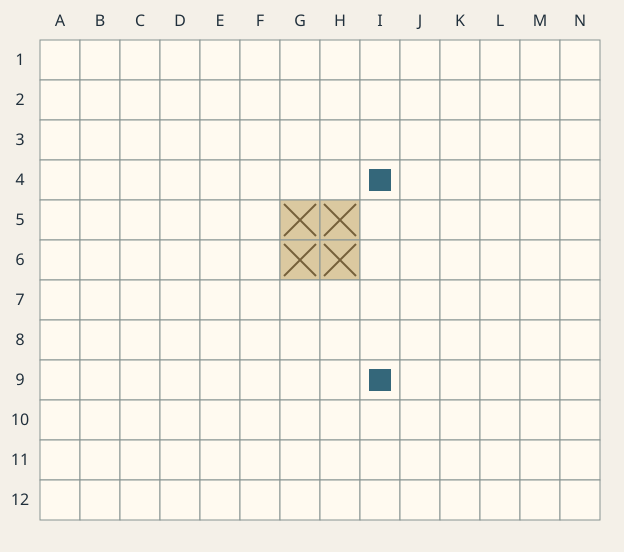

Одинаковые правила, разная история
Все карты совпадают с сеткой нативного пакета: 14 × 12, клетка — 5 футов. G5/H5/G6/H6 — трудная местность; I4/I9 — половинное укрытие. Остальные детали описания декоративны, пока ведущий не изменил поле штатно.
Расстановка и параметры
Герои по порядку: B3, B4, B5, B6, C3, C4, C5. Противники: L3, L4, L5, L6, M3. Используйте только нужное число фигур.
Для 3 / 4 / 5 / 6 / 7 игроков: 2 / 3 / 3 / 4 / 5 противников, здоровье каждого 12 / 14 / 16 / 18 / 20. Защита 12; скорость 20 футов; одна ближняя атака +3, 1d4+1 дробящего урона, досягаемость 5 футов.
Враги — простая поддерживаемая модель. Мирные решения и ограничения сцены описаны отдельно; ведущий подтверждает их результат. После первого раунда напомните пути переговоров или отступления. Встречи не запускаются автоматически.
Чей адрес на ящике
Только по явному решению ведущего и согласованию стола в вечере 4: распорядители подрядчика настаивают на переадресации, а после разговора с фактическим держателем Олегом герои сами выбирают физически удержать ящик. Приход на склад не запускает схватку.
Цель и выходы
Сохранить ящик у согласованного получателя либо выйти с сохранённой копией распоряжения. Победа не требует победить всех людей; потеря ящика не уничтожает улику и позволяет запросить внешнюю помощь.
Роза показывает точную прежнюю передачу, Олег решает, какой следующий шаг выполнит сам, а Лида отвечает за согласие группы. Распорядители могут принять новую передачу; герои вправе оставить ящик у названного держателя и уйти с копиями. Любая сторона может сдаться или предложить прекратить столкновение.
Поведение противников
Взрослый работник в одинаковом сером жилете, уверенный, что действует по обычной накладной. Описание не предполагает тайной жестокости или сверхспособностей.
В условной сцене распорядители занимают пространство возле груза и требуют отойти. Используйте только движение и одну каноническую атаку ближнего боя +3, урон 1d4+1; никаких инструкций о реальных захватах и оружии. При отходе героев они не преследуют; после прямого решения Олега о передаче при Розе прекращают спор. При 0 HP исход описывается без графических подробностей по каноническим правилам и решению ведущего.
Размер группы
3 игрока: 2 противника по 12 HP; 4: 3 по 14 HP; 5: 3 по 16 HP; 6: 4 по 18 HP; 7: 5 по 20 HP. У каждого AC 12, одна атака ближнего боя +3, урон 1d4+1. Базовый foeCount 3 для 4/5 игроков; остальные размеры берутся из нативного варианта. Дополнительных атак, подкреплений и автоматических таймеров нет.

↔ На узком экране прокрутите карту вбок. Полный размер доступен по ссылке ниже.

Поле 14×12: A–N, 1–12. Только G5, H5, G6, H6 — difficult, участок условно намокшей упаковки. Только I4, I9 — half-cover, два обозначенных на поле борта тары. Остальные ящики, столы и стойки декоративны и не дают укрытия или дополнительной трудной местности без явного изменения поля ведущим. Герои занимают по числу мест B3, B4, B5, B6, C3, C4, C5; противники L3, L4, L5, L6, M3 по размеру варианта. Все противники начинают на складе.
Камеру можно опустить
Необязательная ветвь вечера 5: взрослые добровольцы принимают пришедшую радиокоманду за навязчивых репортёров и загораживают встречу. Только если стол сам выбирает физическое столкновение после ясного предложения убрать запись, ведущий может начать схватку.
Цель и выходы
Добиться разговора с самим Севом или отступить с названным адресом для следующего обращения. Нельзя выиграть его согласие атакой: даже выигранная схватка не делает интервью или помощь обязательными.
Убрать запись, представиться и предложить Севу самому выбрать разговор, письменный ответ либо отказ. Он может передать нынешнюю просьбу без интервью. Отказ от встречи оставляет команде честную пометку о неизвестном месте, а не закрывает кампанию.
Поведение противников
Взрослый горожанин в плаще с нарисованной медной буквой. Он хочет защитить людей от съёмки, но пока не спросил их собственного мнения.
Добровольцы остаются у условного входа и повторяют требование прекратить съёмку. Только стандартное движение и одна атака ближнего боя +3 с уроном 1d4+1; жанровое описание не добавляет обездвиживания и других новых правил. Они сразу прекращают столкновение по просьбе Сева или при отходе команды, не преследуя её.
Размер группы
3 игрока: 2 противника, 12 HP каждый; 4: 3, 14 HP; 5: 3, 16 HP; 6: 4, 18 HP; 7: 5, 20 HP. Каждый имеет AC 12 и одну атаку ближнего боя +3 на 1d4+1. foeCount 3 — базовое представление для 4/5 игроков; берите соответствующий нативный вариант, без добавочных способностей.
↔ На узком экране прокрутите карту вбок. Полный размер доступен по ссылке ниже.

Поле 14×12 (A–N, 1–12). Единственные difficult-клетки: G5, H5, G6, H6, где условно лежат мокрые афиши. Единственные half-cover-клетки: I4, I9, две отмеченные тумбы. Все прочие вывески и навесы декоративны, без дополнительных механических свойств, если ведущий не изменил само поле. Начальные места героев: B3, B4, B5, B6, C3, C4, C5; противников: L3, L4, L5, L6, M3 по числу участников варианта. Все противники находятся на Медной террасе.
Оригинал остаётся у Ады
Опционально в вечере 6: представители подрядчика требуют вернуть папку, а после предложения оставить оригинал Аде и взять копии участники осознанно выбирают силовую сцену. Ведущий начинает схватку вручную; признание Марка и основные улики не зависят от победы.
Цель и выходы
Оставить документы у их нынешнего хранителя, обеспечить добровольный выход Ады или отступить с уже сделанными копиями. Это не задача наказать всех распорядителей и не обязательный путь к финалу.
Ада предлагает сохранить оригиналы у себя и дать проверяемые копии обеим сторонам. Можно вообще не забирать бумаги, записав их содержание с разрешения. При уступке или отступлении героев доступ к копии через студию остаётся; любой противник может согласиться прекратить сцену.
Поведение противников
Взрослый служащий с папкой учётных бланков, считающий возвращение оригиналов обычным требованием начальства.
Служащие спорят у стола и не разрушают бумаги. Допустимы только стандартное движение и одна атака ближнего боя +3, урон 1d4+1. Они отходят, если Ада показывает уже выданные копии или Марк отзывает требование; преследования через город нет. Никаких реальных приёмов удержания людей не описывается.
Размер группы
Для 3 игроков 2 противника по 12 HP; для 4 — 3 по 14 HP; для 5 — 3 по 16 HP; для 6 — 4 по 18 HP; для 7 — 5 по 20 HP. AC всегда 12; одна атака ближнего боя +3, урон 1d4+1. База foeCount 3 соответствует 4/5 игрокам; не добавляйте усилений сверх нативного варианта.
↔ На узком экране прокрутите карту вбок. Полный размер доступен по ссылке ниже.

Сетка 14×12, столбцы A–N и строки 1–12. Только G5, H5, G6, H6 считаются difficult из-за условно разложенных рекламных полотен; только I4, I9 дают half-cover как две обозначенные стойки. Все другие витрины, стулья и столы — декорации без укрытия и трудной местности до явной правки поля ведущим. Герои начинают на B3, B4, B5, B6, C3, C4, C5; противники на L3, L4, L5, L6, M3 по составу. Все противники начинают в Стеклянном пассаже.